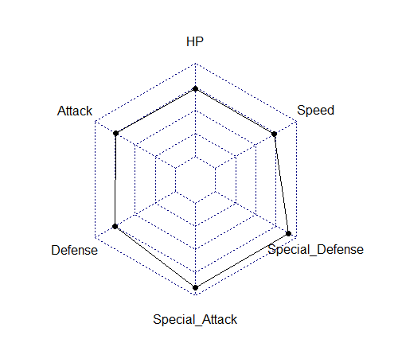
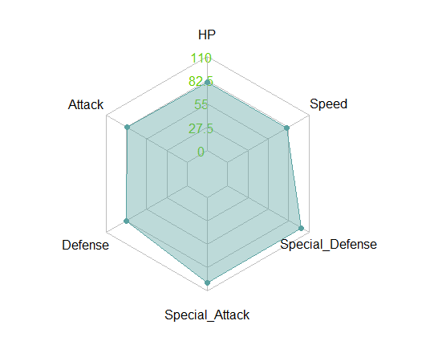
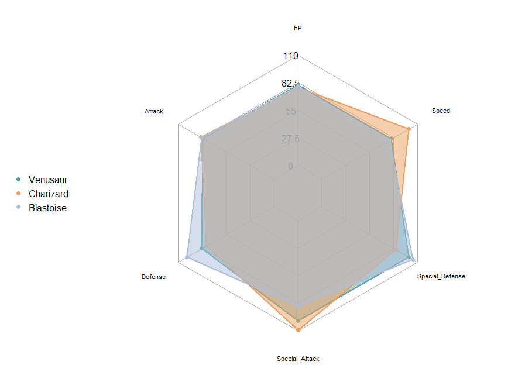
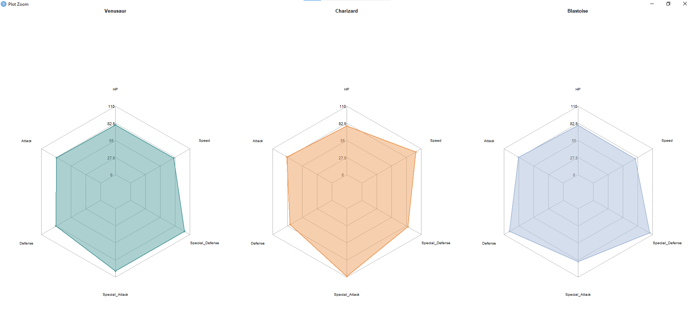
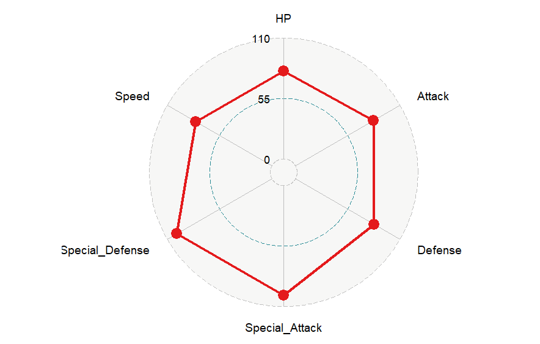
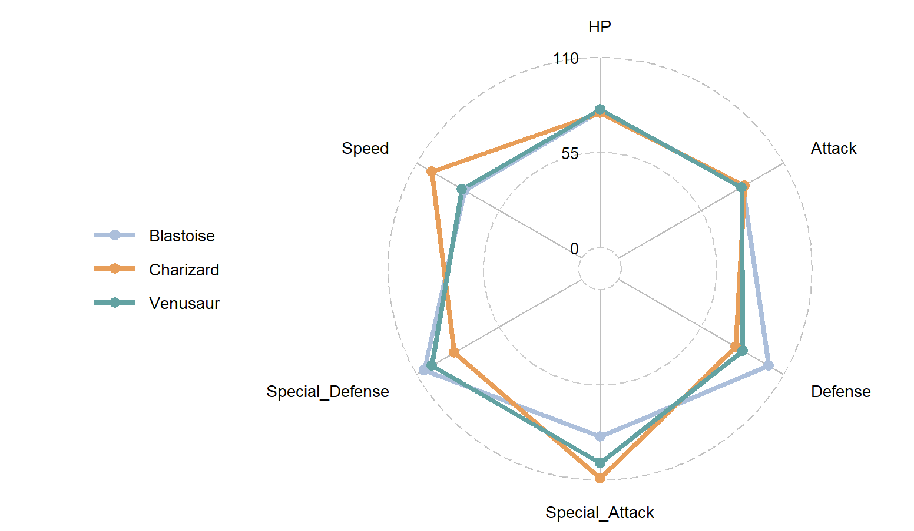

Assignment 5
Make a tutorial on something we did not cover in class
Radar Charts in R.
Radar charts are an important tool when you may want to display multivariate quantitative data. Radar charts are often useful for showing data that is all on the same scale. Tableau has a long, complicated way to make radar charts, but R makes the process super simple and easy to understand. Today, I am going to be walking you through that process. Before getting started, you are going to need 2 things: R and RStudio, both of which can be found by clicking on those blue hyperlinks and following the instructions based on your operating system. The tutorial will be using the Windows Operating System.
Data we will be using.
For this tutorial, I will be going back to my first portfolio assignment, and making a radar chart about the stats of a set of Pokemon. In fact, the Pokemon Company and Gamefreak actually use this chart in their games, so safe to say, it is a pretty good visualization tool.

Step 1: Where to Start
To start, you should open up RStudio and make sure everything is running correctly. Go to "File" in the top right and hover "New File" until you can click on "R Script"

Installing Packages and Using them
In order to do almost anything on R, we need to install code packages. In the box in the top right, you are going to write and run the following code:
install.packages("devtools")
install.packages("fmsb")
install.packages("ggplot2")
install.packages("scales")
install.packages("tidyverse")
!!!IMPORTANT!!! Please run the code as is it given in the code blocks. To do this, just hihglight the code and then hit "Control" + "Enter"
After this, we actually need to tell R that we are using these packages, so we use the "library" command like so:
library(devtools)
library(fmsb)
library(ggplot2)
library(scales)
library(tidyverse)
We have one more package to install and add to our library, "ggradar", but we cannot install that without "devtools"
devtools::install_github("ricardo-bion/ggradar")
install.packages("ggradar")
library(ggradar)
Data Collection/Formation
As mentioned earlier, I will be doing my radar chart on Pokemon, but what exactly will I be doing? I am going to take the 3 Kanto starters and take a look at their fully evolved forms: Venusaur, Charizard, and Blastoise. Let's take a look at thier stats now:
Making the Dataset
Now, we have our six points for our Radar chart. We should put this into a data set.
base_stats <- data.frame(
row.names = c("Venusaur","Charizard","Blastoise"),
HP = c(80,78,79),
Attack = c(82,84,83),
Defense = c(83,78,100),
Special_Attack = c(100,109,85),
Special_Defense = c(100,85,105),
Speed = c(80,100,78)
)
base_stats
!!!IMPORTANT!!!Do not use special characters or spaces when making names for data. Use underscores or periods for spaces.
Making a Max and Min
In order for a radar chart to work, all data should be on similar levels of data. You probably should not have data that goes from 0 to 6000 as well as data that goes from 0 to 1 (although, there is a secret tool to help us later, if you need to do that). Let's define a maximum and a minimum. In my opinion, a radar chart looks better if none of the sides are completely filled out. I think they look the best if it is close to filling out a side, but doesn't entirely, with that in mind, let's define some parameters already!
maxi_mini <- data.frame(
row.names = c("Max","Min"),
HP = c(110,0),
Attack = c(110,0),
Defense = c(110,0),
Special_Attack = c(110,0),
Special_Defense = c(110,0),
Speed = c(110,0)
)
maxi_mini
Now, we just need to combine the two data sets, since, in order to create a radar chart in R, you have to have the data set in a way that:
- The data set's first row is the maximum value (or higher) for each value.
- The data set's second row is the minimum value (or lower/is 0) for each value.
- There is more than 2 data points to be shown.
- Each row following the first two are your data points.
df_maxmin <- rbind(maxi_mini,base_stats)
df_maxmin
Great! If you're following with my data, you should have a data frame with 5 rows, the first two being called "Max" and "Min" and the rest are the names of the 3 Kanto starters.
Making the Radar Chart
Now, its time to make the radar chart. For now, let's just take a look at Venusaur's stats.
VenusaurStats <- df_maxmin[c("Max","Min","Venusaur"),]
VenuRadar <- radarchart(VenusaurStats)
VenuRadar
And you should get something like this!
Making adjustments and adding more variables
Theres a lot of arguements you can add to the inside of the "radarchart" parenthesis. These are mainly to mess with the look of the chart and to make it look nicer. I will add some basic ones with this code, including:
- 'axistype' = 4: enables "caxislabels" to show
- 'caxislabels' = c(0,22.5,55,82.5,110): shows the 0%, 25%, 50%, 75%, and 100% of the radar chart and its lines. (find those out yourself for different data)
- 'axislabelcol' = "chartreuse3": chooses the color of the labels on the axis
- Polygon Options, which include: 'pcol' (chooses line color), 'pfcol' (chooses fill color), 'plwd' (line width), and 'plty' (line type; can be “solid”, “dashed”, “dotted”, “dotdash”, “longdash”, or “twodash”)
- Grid Options, which includes: 'cglcol' (chooses line color), 'cglty' (line type, same as before), and 'cglwd' (line width)
!!!IMPORTANT!!!When using 'pfcol', using the 'scales::alpha()' makes a shade rather that making the polygon the full color. Use 'alpha("color",[number between 0 and 1])
Lets see some of those changes in action! Here is some updated code:
VenuRadar <- radarchart(VenusaurStats, axistype = 4, caxislabels = c(0,27.5,55, 82.5, 110), axislabcol = "chartreuse3",
pfcol = scales::alpha("#5AA2A1",0.4), pcol = "#5AA2A1", plty = "solid", cglcol = "gray",
cglty = "solid", cglwd = 1.3)
And you should get something like this!
Making Multiple plots on the same chart for different individuals
Now what if we wanted to see Charizard and Blastoise's stats as well as Venusaurs stats? That would be easy!
First, let's create a function that can make Radar charts with a set list of specifics we want for our chart. For now, we are going to set the specifics to be similar to our Venusaur chart. We are also going to reduce our plot margin to making the chart look cleaner on the outside.
Let's take a look at it now!
PokeCharts <- function(data, color = "#5AA2A1", vlabels = colnames(data), vlcex = .75,
caxislabels = c(0,27.5,55, 82.5, 110), title= NULL){
radarchart(
data, axistype = 4,
pcol = color, pfcol = scales::alpha(color,0.4), plwd = 2.3, plty = 1,
cglcol = "darkgray", cglty = 1, cglwd = 1.3,
axislabcol = "black",
vlcex = vlcex, vlabels = vlabels,
caxislabels = caxislabels, title = title,
)
}
plotmarg <- par(mar = c(1,2,2,1))
PokeCharts(VenusaurStats)
par(plotmarg)
Now lets make a plot for all 3 of the Pokemon!
PokeCharts(data = df_maxmin, caxislabels = c(0,27.5,55, 82.5, 110), color = c("#5AA2A1","#ED9F5F","#ABBEDA"))
plotmarg <- par(mar = c(1,2,2,2))
legend(x="left", legend = rownames(base_stats[-c(1,2)]), horiz = FALSE,
bty = "n", pch = 20, col = c("#5AA2A1","#ED9F5F","#ABBEDA"),
text.col = "black", cex = 1, pt.cex = 1.5)
par(plotmarg)
Which give us this image... doesn't look the best. But we can fix it!
Now were going to make seperate radar charts for each one, but they will be side by side. I edited the 'vlcex' in the function a bit to make the stat names look better. Here is the code to make the charts go next to eachother.
colors <- c("#5AA2A1","#ED9F5F","#ABBEDA")
PokemonNames <- c("Venusaur","Charizard","Blastoise")
plotmarg <- par(mar = c(1, 1, 1, 1))
par(mfrow = c(1,3))
for(i in 1:3){
PokeCharts(
data = df_maxmin[c(1,2, i+2), ], caxislabels = c(0,27.5,55, 82.5, 110),
color = colors[i], title = PokemonNames[i]
)
}
par(plotmarg)
And here is the finished product!
We do have one more way to make plots. This section will be shorter.
GGPLOT2/GGRADAR
GGRadar is worse in my opinion, however it is good if you have data on different scales. I won't be getting different data for this, but it is good if you need that sort of thing. You can find more information about scaling data here. Keep in the same R Script for this. To plot Venusaur, lets take a look at our "base_stats" item. We currently have our rows as the 6 Pokemon stats, we would like to update that so that our Pokemon names are also in a row. This is simple.
base_stats_with_names <- base_stats %>% rownames_to_column("PokeNames")
base_stats_with_names
Next, you're going to want to make the plot using the ggradar function.PRO TIP:If letters are getting cut off of your labels, press the "Zoom" button to get a full look at the chart.
You can also add fun things similar to how they were added in fmsb. Here are a couple:
- group.line.width: changes the line width of the polygon
- group.point.size: changes the point size on the tips of the polygon
- group.colours: changes the colo(u)r of the polygon
- background.circle.colour: changes the background colo(u)r of the circle
- gridline.mid.colour: changes the line colo(u)r of the cicle
Here is the update code and the image after I added parameters:
ggradar(base_stats_with_names[1,],
values.radar = c("0","55","110"),
grid.min = 0,
grid.mid = 55,
grid.max = 110,
group.line.width = 2,
group.point.size = 4,
group.colours = "#5AA2A1",
background.circle.colour = "white",
gridline.mid.colour = "grey"
)
Now, in order to see all three Pokemon, we just need to change a couple things about the code, but once we do that, we have a pretty good chart!
ggradar(base_stats_with_names,
values.radar = c("0","55","110"),
grid.min = 0,
grid.mid = 55,
grid.max = 110,
group.line.width = 2,
group.point.size = 4,
group.colours = c("#ABBEDA","#ED9F5F","#5AA2A1"),
background.circle.colour = "white",
gridline.mid.colour = "grey"
)
!!!IMPORTANT!!! GGRadar will put your points in alphabetical order, make sure if you want certain colors to go to certain stats, order them in alphabetical order, and then put the colors in that order. I wanted blue to go with Blastoise, orange with Charizard, and Green with Venusaur, so I ordered my colors in the 'group.colors' command to fit that.
Conclusion
This is the end of the tutorial. If you have any questions, please message me on discord under the username "Thirty3DeeJays". I hope this tutorial is simple to follow! :)